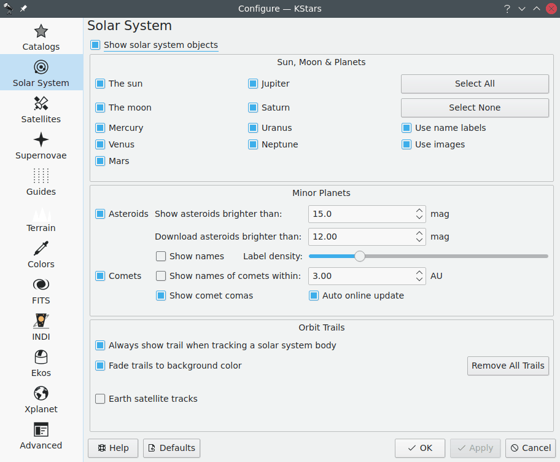

Dans l'onglet Système solaire, vous pouvez spécifier si le Soleil, la Lune, les planètes et astéroïdes seront affichés, et si les corps principaux sont dessinés comme des cercles colorés ou comme de vraies images. Vous pouvez aussi choisir si les corps du système solaire ont leurs noms attachés ou non, et contrôler combien de comètes et astéroïdes ont leur nom en libellé. Il y a une option pour attacher automatiquement une “trace orbitale” temporaire si un corps du système solaire est suivi, et une autre pour choisir si la couleur des traces de l'orbite disparaît dans la couleur de fond du ciel.